Candidate List 20260909Last night — ZTF: 1,443 passed basic cuts (48 young) · LSST: 0 passed basic cuts (0 young)Previous Day Next Day
Section 1: New Sources (age<1d) Section 2: Old (1-5d) sources observed last nightplaceholder
Section 2: Older Sources Observed Last Night (6)
0. [ZTF] ZTF26abrzjia (Afterglow?FBOT?) [Back to Top] [Share] [Trigger Swift] [Fritz Alert] [Fritz Source] [Lasair]RA, Dec: 41.70543, -2.92394 2h46m49.30s, -2d-55m-26.20sGalactic (l, b): 176.66679, -53.30266 ext(g-r) = 0.042


TESS: Sectors 109
SDSS (<15 kpc):Found SDSS phot-z: z=0.11; peak abs mag = -19.75
PS1: 0 sources in 3 arcsec
LegacySurvey: 1 sources in 3 arcsec Closest: d = 0.50 arcsec, 149.9 deg (east of north) photoz=0.53 (68% bounds 0.27, 1.05), type=PSF peak abs mag (ext. corrected) = -23.69 (68% bounds -21.99, -25.5)

Extinction-corrected gr color:
From alerts: 0.14 +/- 0.23 mag
Consistent with synchrotron, g-r>0!
Rise Rate:
g: 0.14 mag/day
r: 1.02 mag/day
Fade Rate:
1. [ZTF] ZTF26absfire (FBOT?) [Back to Top] [Share] [Trigger Swift] [Fritz Alert] [Fritz Source] [Lasair]RA, Dec: 29.68195, 1.46075 1h58m43.67s, 1d27m38.70sGalactic (l, b): 155.15473, -57.14024 ext(g-r) = 0.026


TESS: Sectors [ 4 42 70 97]
SDSS (<15 kpc):Found SDSS phot-z: z=0.88; peak abs mag = -25.45
PS1: 0 sources in 3 arcsec
LegacySurvey: 1 sources in 3 arcsec Closest: d = 1.48 arcsec, 284.4 deg (east of north) photoz=0.13 (68% bounds 0.09, 0.17), type=REX peak abs mag (ext. corrected) = -20.68 (68% bounds -19.76, -21.32)

Extinction-corrected gr color:
From alerts: -0.13 +/- 0.17 mag
Extinction-corrected gi color:
From alerts: -0.2 +/- 0.23 mag
Extinction-corrected ri color:
From alerts: -0.07 +/- 0.21 mag
Consistent with synchrotron, g-r>0!
Rise Rate:
g: 0.28 mag/day
r: 0.27 mag/day
Fade Rate:
2. [ZTF] ZTF26absrrej (FBOT?) [Back to Top] [Share] [Trigger Swift] [Fritz Alert] [Fritz Source] [Lasair]RA, Dec: 38.04328, 23.91988 2h32m10.39s, 23d55m11.58sGalactic (l, b): 150.72249, -33.4588 ext(g-r) = 0.138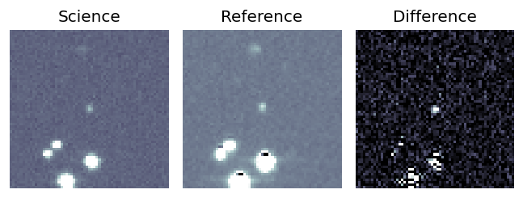
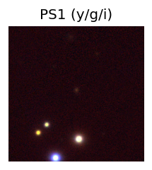
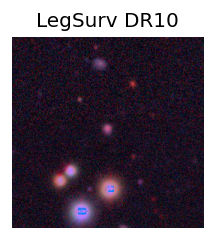
TESS: Sectors [18 42 43 44 58 70 71 85]
SDSS (<15 kpc):Found SDSS phot-z: z=0.29; peak abs mag = -21.13
PS1: 0 sources in 3 arcsec
LegacySurvey: 1 sources in 3 arcsec Closest: d = 0.56 arcsec, 188.7 deg (east of north) photoz=0.54 (68% bounds 0.3, 0.81), type=EXP peak abs mag (ext. corrected) = -22.75 (68% bounds -21.25, -23.81)
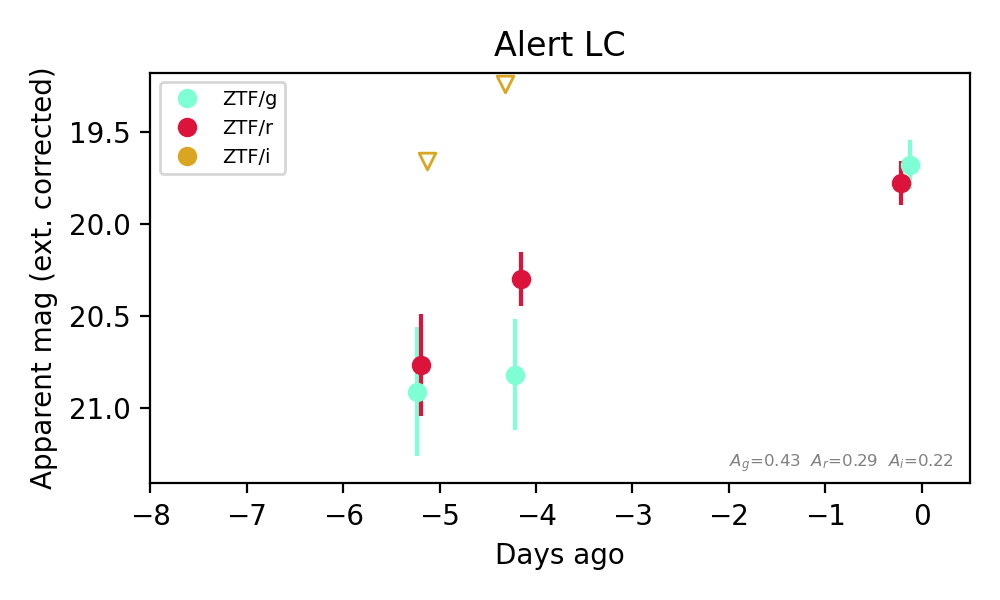
Extinction-corrected gr color:
From alerts: -0.1 +/- 0.18 mag
Extinction-corrected gi color:
From alerts: 1.58 +/- 99 mag
Extinction-corrected ri color:
From alerts: 1.06 +/- 99 mag
Consistent with synchrotron, g-r>0!
Rise Rate:
g: 0.26 mag/day
r: 0.16 mag/day
Fade Rate:
3. [ZTF] ZTF26abssfae (Afterglow?) [Back to Top] [Share] [Trigger Swift] [Fritz Alert] [Fritz Source] [Lasair]RA, Dec: 58.47031, 4.1365 3h53m52.87s, 4d 8m11.39sGalactic (l, b): 184.72129, -36.01937 ext(g-r) = 0.342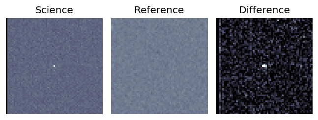
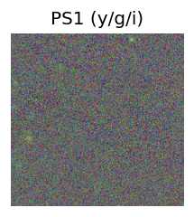
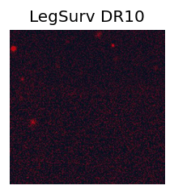
TESS: Sectors 5
PS1: 0 sources in 3 arcsec
LegacySurvey: 0 sources in 3 arcsec
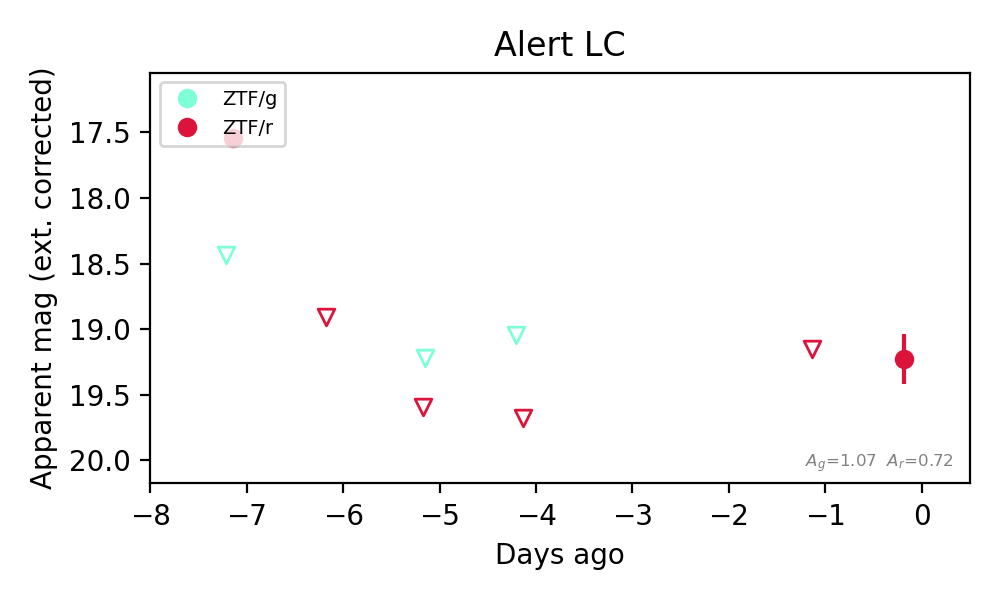
Extinction-corrected gr color:
From alerts: 0.89 +/- 99 mag
Rise Rate:
r: 0.83 mag/day
Fade Rate:
r: 1.41 mag/day
4. [ZTF] ZTF26absskld (Afterglow?) [Back to Top] [Share] [Trigger Swift] [Fritz Alert] [Fritz Source] [Lasair]RA, Dec: 61.2411, 75.12206 4h 4m57.86s, 75d 7m19.40sGalactic (l, b): 134.49822, 16.79365 ext(g-r) = 0.24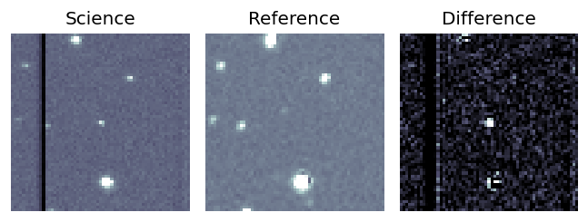
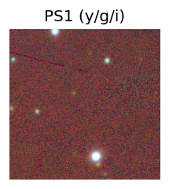

TESS: Sectors [25 26 52 53 59 73 79 86]
PS1: 1 source in 3 arcsec Closest: d = 6.20 arcsec photoz=0.68+/-0.16 peak abs mag = -24.97
LegacySurvey: 0 sources in 3 arcsec
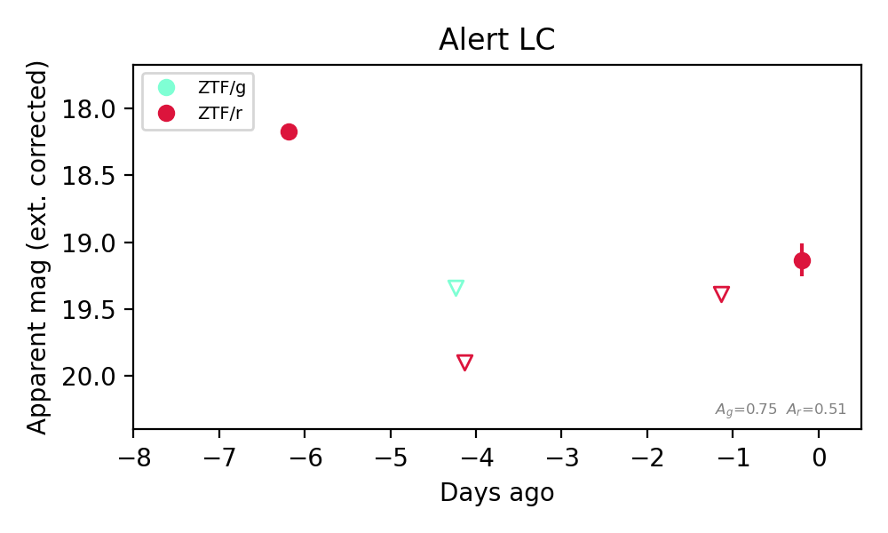
Rise Rate:
r: 0.28 mag/day
Fade Rate:
r: 0.84 mag/day
5. [ZTF] ZTF26abssxth (Afterglow?) [Back to Top] [Share] [Trigger Swift] [Fritz Alert] [Fritz Source] [Lasair]RA, Dec: 58.24132, -3.79836 3h52m57.92s, -3d-47m-54.08sGalactic (l, b): 192.78204, -40.8395 ext(g-r) = 0.209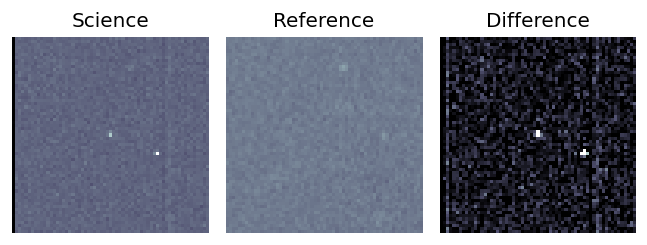
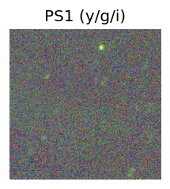
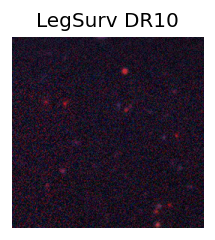
TESS: Sectors [ 5 31 109]
PS1: 0 sources in 3 arcsec
LegacySurvey: 0 sources in 3 arcsec
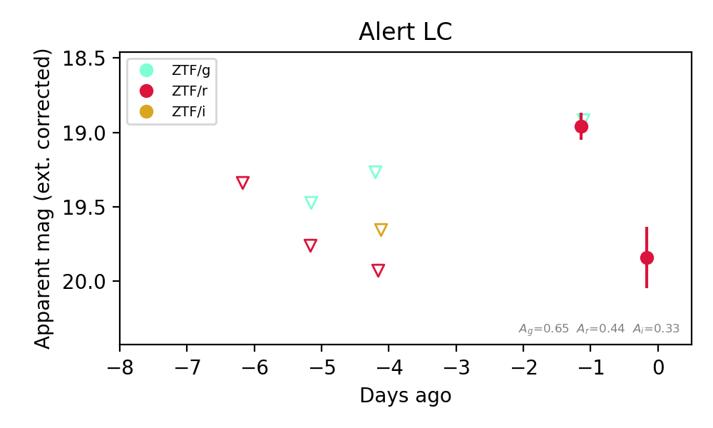
Extinction-corrected gr color:
From alerts: -0.04 +/- 99 mag
Rise Rate:
r: 0.32 mag/day
Fade Rate:
r: 0.91 mag/day